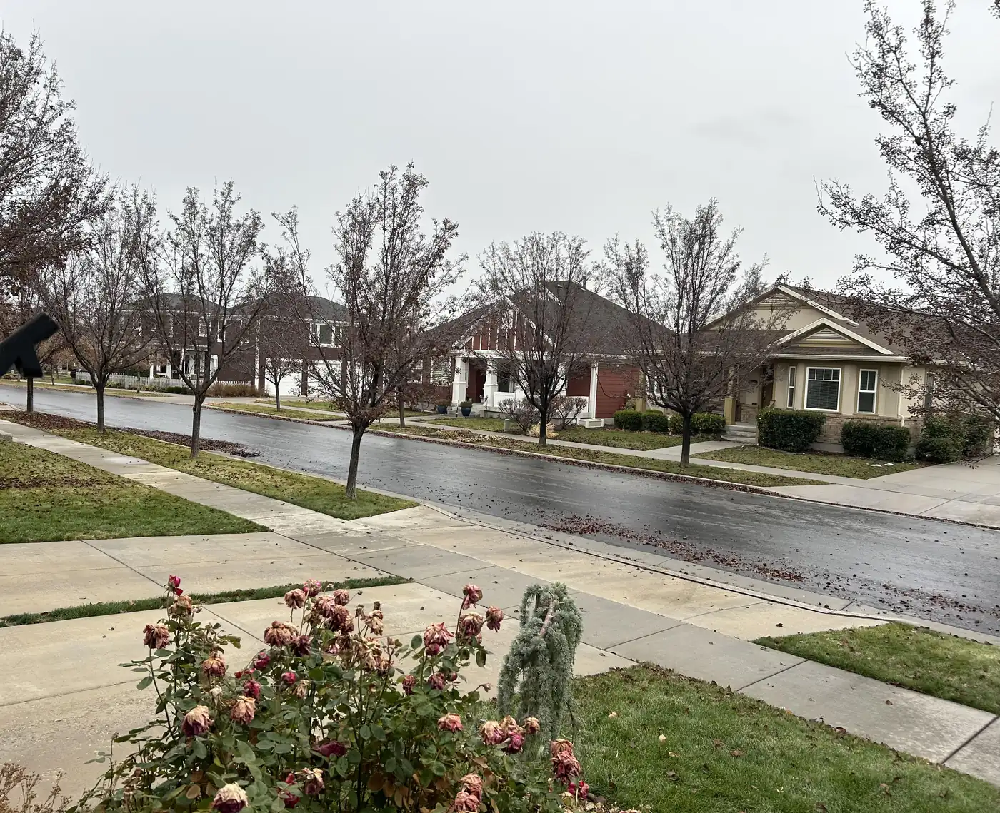

HOA management · Lehi, Utah · UT, WA, ID, AZ
HOA management in Lehi that keeps the board in charge.
Advanced Community Services manages homeowners associations and condominium communities: a Community Manager for your day-to-day needs, transparent monthly reporting at every board meeting, and an online portal for your board and homeowners.
Tonight’s board meeting
- 7:00Monthly financial reportPrepared by ACS, presented to the board
- 7:15Open action itemsFrom the homeowner forum
- 7:30Inspections & vendorsBi-weekly inspection notes, maintenance quotes
- 7:45Reserve planningWhat needs funding now
Atmosphere photo: Daybreak, South Jordan, Utah · Dean Derhak, CC BY-SA 3.0, via Wikimedia Commons
Community Action Items
Every request, from reported to closed.
Homeowners report issues in a private forum. The board oversees them. Your Community Manager works them, and nothing falls through the cracks between meetings. Pick a request and follow it.
01Reported
02On the board’s list
03Manager on it
04Closed
A homeowner posts it in Community Action Items.
The board sees it on the action list between meetings.
Your Community Manager gets custom quotes for sprinkler maintenance and supervises the crew.
Closed, and noted in the monthly report to the board.
A neighbor reports it through the private forum.
The board reviews it against the governing documents.
ACS addresses the violation and processes the architectural compliance form.
Resolved and on record.
The utility notice comes in to ACS.
The board is told right away.
A broadcast goes to every owner about the shutoff.
Owners knew in time. Closed.
The owner or their agent asks for documents.
Routine. No board vote needed.
ACS provides resale and refinancing documents to the lender and title company.
Closed. A welcome packet is automated for the new owner.
The account shows unpaid dues.
The board sees it in the monthly financial report.
A friendly late-fee notice goes out; if needed, ACS coordinates legal services at a discounted rate.
Paid, or handed to the board’s attorney.
A board member raises long-term repairs.
It goes on the next board meeting agenda.
ACS starts with a reserve analysis that makes clear what needs to be planned for now.
A plan the board can fund. Closed.
What we do
Three kinds of help for your HOA.

Management services
A Community Manager, dues collection, rule enforcement, maintenance crews and 24/7 emergency availability.
- Supervise on-site maintenance crews
- Collect association monthly dues
- Address violations of association rules and regulations
- Multiple ways to pay: paper bills, credit card processing and bill pay
- Monthly association reports
Online services
A full-service website for every association, with separate access for board members and homeowners.
- An interactive website developed for each association
- Board member list and board meeting minutes
- Easy access to the association’s monthly records
- Distribute and store important association documents
- Board access to financial records and meeting follow-ups
Professional services
Reserve analysis, transparent financials, compliance, insurance claims and legal coordination.
- Process architectural compliance forms
- Coordinate corporate reports and IRS filings
- Resale and refinancing documents for lenders and title companies
- Transparency and accountability for all community financials
- Manage insurance claims
Our mission
Our mission is to be the trusted partner every HOA deserves; driven by innovation and integrity, we communicate clearly, manage finances with expertise and transparency, complete projects in a timely manner, and serve as a strong, reliable industry expert wholly committed to increasing the value of every community we serve.
What boards say
From the communities we manage.
ACS was there for us when our in house manager of 13 years quit without notice. Our Board was new and over whelmed. ACS helped us to put our HOA back on track. It’s been 10 months since we hired ACS and our HOA has accomplished so much with Jeremy Johnson’s help and guidance.
Our board has been very pleased with the management of our community by ACS. They are responsive to our needs and our finances have improved substantially since we hired them. For example, after reviewing our trash removal contract, they were able to negotiate our monthly bill down to almost half of the previous total. They provide training to board members on our duties and responsibilities and explain the new laws and how they affect us. Managing our property is more than just a job for ACS. They definitely go above and beyond the regular expectation of a property management company. They genuinely care about the well-being of our community, just as they would treat their own property, and we truly get an advanced service. We highly recommend their services.
We were previously self-managed and hiring ACS has done wonders for our community. They have helped us through redoing our rules and making sure we are up-to-date on new rules and laws that affect HOAs. They have also helped us with negotiating vendor contracts to ensure we are getting the best deals. In fact, they noticed a discrepancy in our Comcast billing right away and not only did they get our monthly bulk bill reduced by $300 per month, but they also got the HOA a refund of over $13,000.00 by reviewing our initial contract. The refund alone will pay for their management fees for the next 2 years! These are just a couple highlights of many benefits we receive from ACS. I strongly recommend their services for any community.
Questions
For board members.
01What does a Community Manager do?
Your Community Manager helps the board, and every member, handle the HOA’s day-to-day needs: paying bills, working with vendors, beautifying the property and keeping the community in compliance with its governing documents.
02How do board members see the finances?
ACS prepares a transparent monthly report that is presented at each board meeting. Reports are customizable and always available to board members, and each community has its own separate bank account.
03What do homeowners get online?
Each association gets its own website. Homeowners can pay dues, read the CC&Rs and bylaws, review meeting minutes and send ideas or complaints. Board members get a second level of access to financial records, action items and meeting follow-ups.
04What happens in an emergency?
An HOA is a 24/7/365 operation. ACS and your Community Manager are available at any time of day for emergencies, and ACS contact information is printed on every newsletter, mailing and website.
05Where do you manage communities?
ACS serves all of Utah, plus Washington, Idaho and Arizona, from its corporate office in Lehi.
Where we work
- Utah
- Washington
- Idaho
- Arizona
Offices listed on our site
Clearfield · Lehi · Eagle Mountain · St. George · Park City (2)
Corporate: 2940 W Maple Loop Dr #102, Lehi, UT 84043
Sprinkler blowouts, snow contracts, shutoff notices and frozen pipes: a checklist for your HOA before the first freeze.
Read itRequest a Bid
Increase the value of your community.
Call 1-877-844-4227 or request a bid. A Community Manager, transparent monthly reporting, and an online portal for your board and homeowners.
Request a Bid